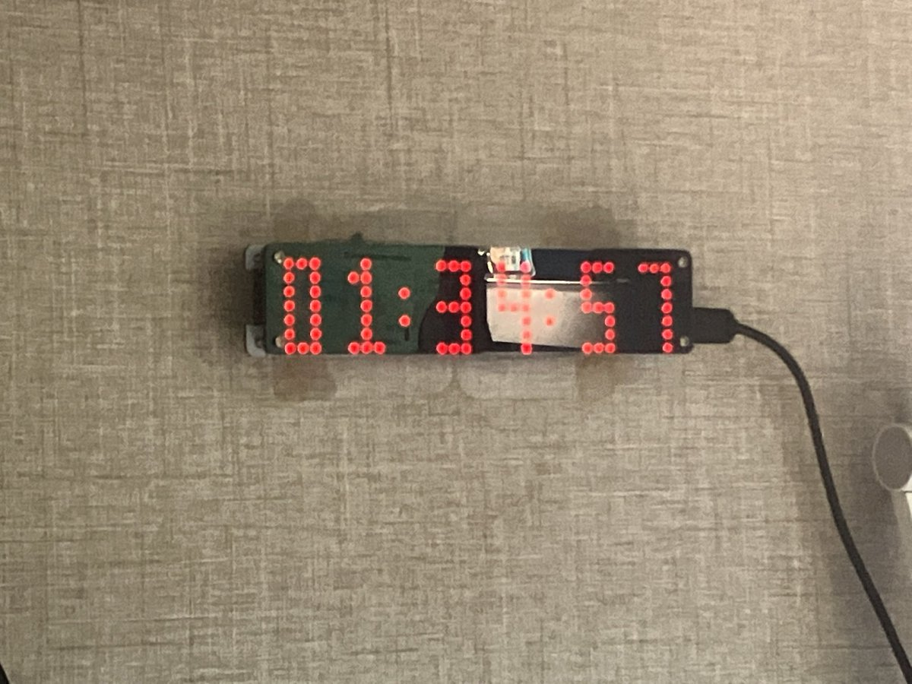

夜桜侵雪～
@Minecraftxfj
@neginegi555 @LHC20160726 和联网有关的东西的话感觉 esp 会很舒服的样子，开发压力低成本也很低，而且都画板子了的话，直接放模组然后引出来 RXTX 不就好了嘛，也可以不放 CH340 上去，目前为什么还要直接装开发板上去捏（？）

鴨川ネギ (⃔ *`꒳´ * )⃕↝🖤
@neginegi555
@Minecraftxfj @LHC20160726 最近习惯用pico，而且PICO是DIP的，ESP32还得再加个CH340啥的